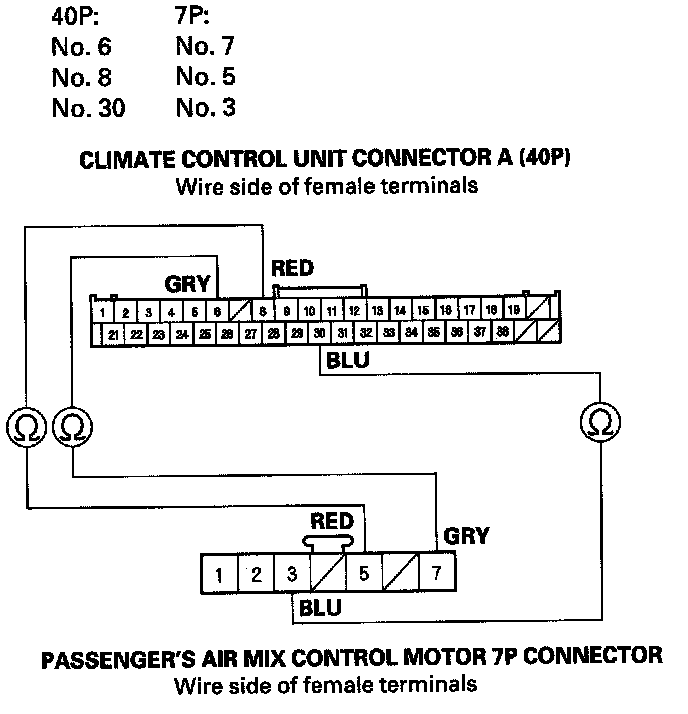

B1236
DTC B1236 or DTC indicator M and AUTO: An Open in the Passenger's Air Mix Control Motor Circuit1. Clear the DTC with the HDS.
2. Turn the ignition switch OFF and then ON (II).
3. Do the self-diagnostic with the HDS or climate control unit.
4. Check for DTCs.
Is DTC B1236 or M and AUTO indicated?
YES - Go to step 5.
NO - Intermittent failure, check for loose wires or poor connections on the passenger's air mix control motor circuit.
5. Turn the ignition switch OFF.
6. Test the passenger's air mix control motor.
Is the passenger's air mix control motor OK?
YES - Go to step 7.
NO - Replace the passenger's air mix control motor.
7. Disconnect the passenger's air mix control motor 7P connector.
8. Disconnect climate control unit connector A (40P).

9. Check for continuity between the following terminals of climate control unit connector A (40P) and the passenger's air mix control motor 7P connector.
Is there continuity?
YES - Check for loose wires or poor connections at climate control unit connector A (40P) and at the passenger's air mix control motor 7P connector. If the connections are good, substitute a known-good climate control unit and recheck. If the symptom/indication goes away, replace the original climate control unit.
NO - Repair open in the wire(s) between the climate control unit and the passenger's air mix control motor.